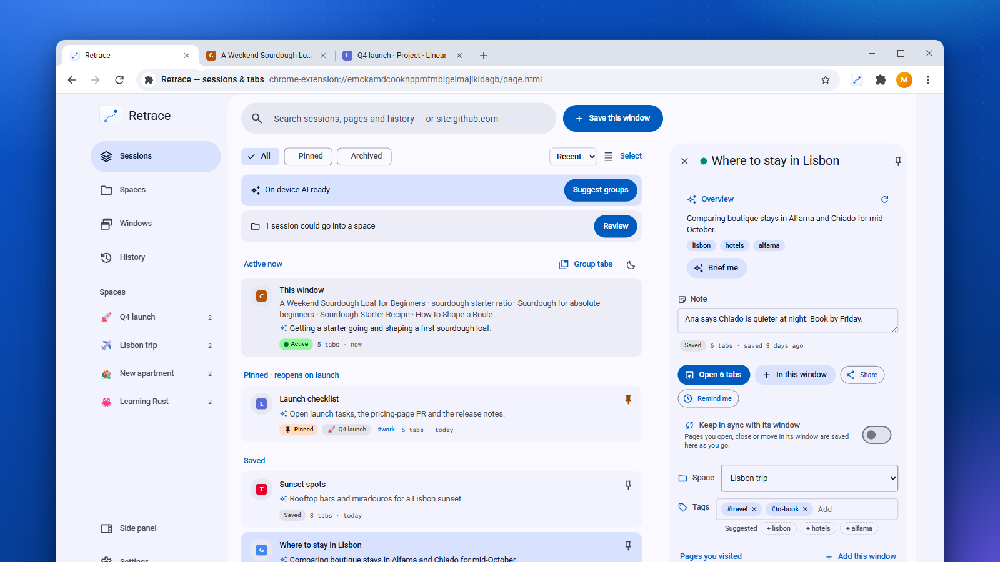
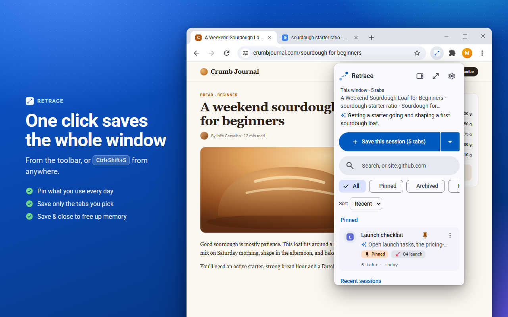
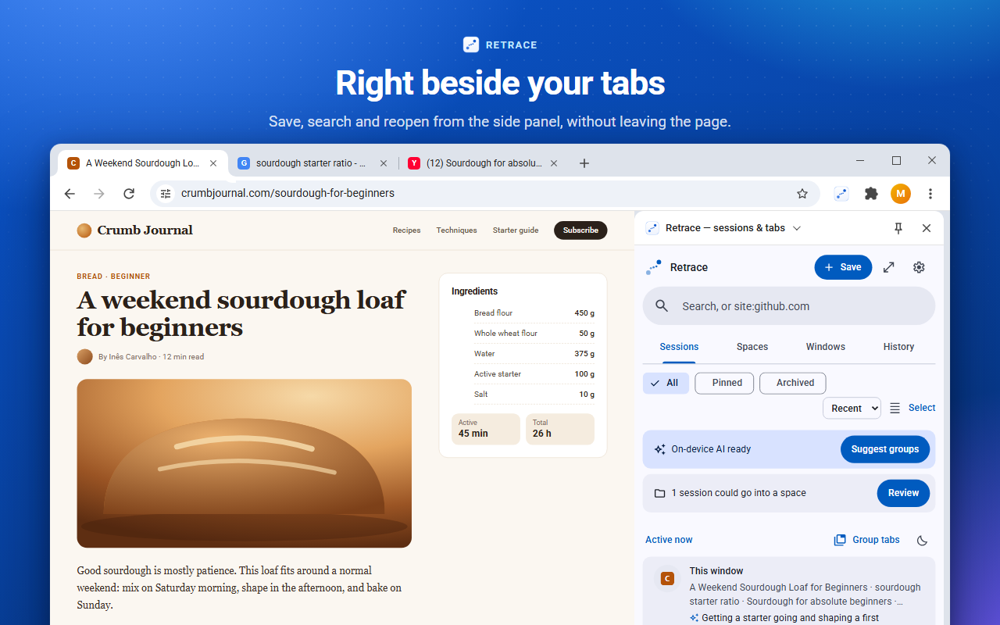
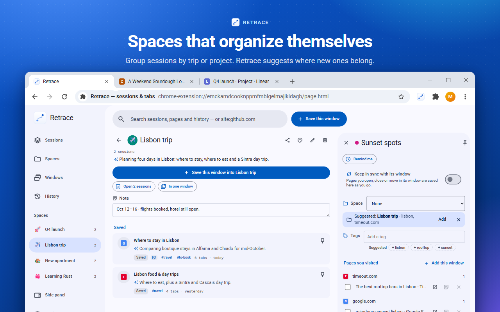
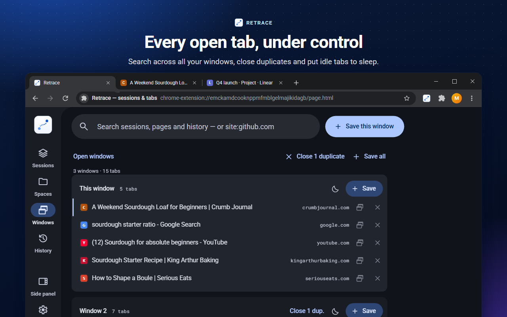

Turn a mess of tabs into sessions you can come back to.
Save any window as a session in one click, pin the ones that matter, search across all of them, and reopen a whole set whenever you need it. No account, no sync, no network calls.
Free on both Chrome and Edge. The Edge version adds an optional Retrace Pro unlock — one-time $10 for Backup & restore and custom keyboard shortcuts, details below.

See it in action
The same Retrace in the toolbar popup, the side panel and a full page — in light or dark.




Everything you need to retrace your steps
Three surfaces — popup, side panel, full page — that all share one design. Save from any of them, or with a keyboard shortcut.
⧉One-click sessions
Save the current window as a named session from the popup, side panel, full page, or a shortcut. Re-saving the same window refreshes it instead of piling up duplicates.
★Pin & archive
Pin the sessions that matter so they reopen when your browser starts. Archive the rest to keep your list clean without losing anything.
≋Sessions that describe themselves
Retrace reads what your tabs actually are — the words you searched, the video, the repo, the article — and names and summarizes each session from that, with site names and clutter stripped away. No more “google.com” as a summary. No AI needed.
◧Smart Spaces
Folders that gather related sessions over time — and learn what they're about. Save a window and Retrace suggests the right Space (or files it for you, if you like), sorts your unfiled sessions in a tap, and proposes new Spaces for ones that belong together. Add rules like “anything from jira.acme.com goes to Work”, an emoji, a colour and a note, and open a whole Space in one go.
⌕Search that understands you
Search titles, summaries, notes, pages and web addresses — even the words inside a search you made. Filter with in:Work, is:pinned or “last week”, or just ask in a sentence: “hotels I looked at last week”. Sort, multi-select, and a 30-day trash means nothing is deleted by accident.
✎Notes
Write down why you saved something, or what's left to do — on a session, on a single page in it, or on a whole Space. Notes are searchable and stay on your device.
▦Tab groups, made and kept
One click sorts a messy window into real browser tab groups by topic (with Undo). And Retrace captures your tab groups — names and colors — when you save a window, and restores them when you reopen it.
✦On-device AI — 100% local
On Chrome and Edge, when your device supports its built-in AI (Chrome's Gemini Nano or Edge's own on-device model), Retrace writes sharper summaries, names and briefs, reads sentence searches, and helps pick the right Space — right on your machine, in your tabs' language. Nothing about your tabs ever leaves the device, and everything still works without it.
◐Material 3, your way
A clean Material 3 interface in light or dark, with six accent colours and a compact mode that fits twice as many sessions — consistent across the popup, side panel and full page.
⟳Sessions that keep themselves up to date
Turn on “Keep in sync” and a session follows its window as you open, close and move tabs — no re-saving. It picks up again when you reopen it, even after a restart.
▤Every window at a glance
See all your open windows in one place: search every open tab, jump to one, drag tabs between windows, save them all at once, close duplicate tabs, and put background tabs to sleep to free memory.
↺A timeline you can go back through
Retrace quietly notes which pages are open every few minutes. After a crash — or when you need that tab you closed an hour ago — slide back through the day, or search for the page. Optionally close tabs as you save them, to free up memory.
#Tags, reminders & sharing
Tag sessions your way and search with #tag. Ask Retrace to bring a session back tomorrow or next week. Share a session or a whole Space as links, Markdown, a web page or a file another Retrace opens — nothing is uploaded.
⇪Bring your tabs with you
Import from OneTab, Session Buddy, Toby or your browser bookmarks — each group becomes a session, and anything you've already saved is skipped. Free on both browsers.
◎Ready in one click
A quick welcome on first run lets you save your current window as your first session, and points out the popup, side panel, full page and keyboard shortcuts — so you're set up in seconds. Free on both browsers.
⌘Keyboard shortcuts
Drive Retrace from the keyboard — select a session and pin, archive, rename, reopen or open it, jump to search or filters, with a cheat sheet. Every key rebindable. Part of Retrace Pro.
Private isn't a setting — it's the architecture
Retrace has no servers to send your data to. That's not a promise you have to trust; it's how it's built.
Chrome or Edge?
Retrace is free on both — here's what differs between the two builds.
| Feature | Chrome | Edge |
|---|---|---|
| Free to install | ✓ | ✓ |
| Sessions, Smart Spaces, notes, search & history | ✓ | ✓ |
| Tab groups (one-click grouping), sort & multi-select | ✓ | ✓ |
| On-device AIwhen your device supports it | ✓ | ✓ |
| Backup, encryption & connected file | — | ✓ |
| Shortcuts, palette, Tidy up, 30-day timeline, auto-archive & templates | — | ✓Retrace Pro · $10 |
Retrace Pro
One optional unlock adds a growing set of power features — backup & restore (with encryption and a connected-file option), keyboard shortcuts and a command palette, Tidy up, a 30-day recovery timeline, auto-archive, and templates. A one-time purchase — no subscription, no account. Available on the Microsoft Edge version of Retrace.
- Backup & restore, with optional password encryption
- Connected backup file — two-way sync (encrypted by default) through a synced folder
- Keyboard shortcuts + ⌘/Ctrl-K palette, all rebindable
- Tidy up your library — merge overlapping sessions, clear duplicates and stale ones
- 30-day recovery timeline, auto-archive & reusable templates
- Verified offline — no phone-home, ever
Secure checkout by Paddle, our payment provider. You'll receive a license key by email to paste into the Edge version of Retrace. See our Terms of Sale and Refund Policy.
After you buy
Your key unlocks Retrace Pro — Backup & restore and keyboard shortcuts — in the Microsoft Edge version of Retrace, on the device you paste it into.
- Check your email for the license key — it looks like
RTRC-…. - Open Retrace → Settings → Backup & restore.
- Paste your key and press Unlock. It's verified on your device — Retrace Pro turns on right away.